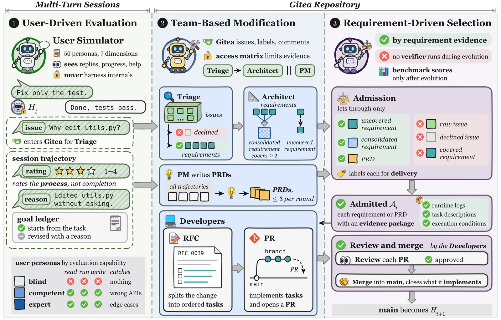
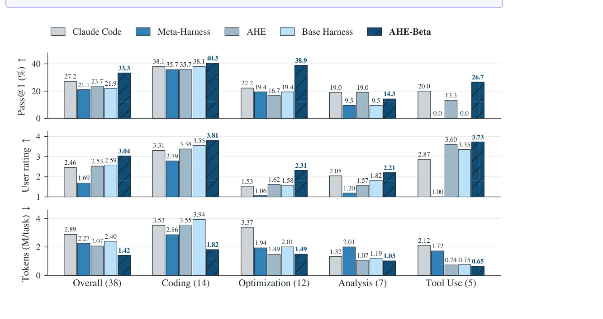
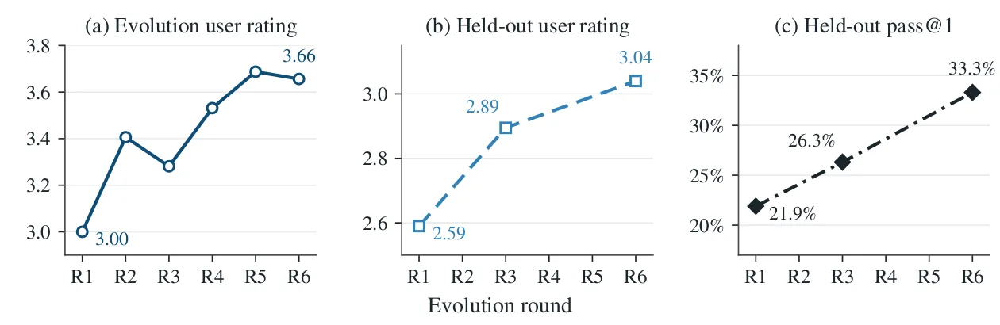

O Problema da Engenharia de Harnesses
Agentes de codificação estão cada vez mais integrados em fluxos de trabalho de software de longo prazo, desde a resolução de issues em repositórios reais até workflows complexos de terminal. O desempenho desses agentes não depende apenas da capacidade do modelo de linguagem base (LLM), mas também do 'harness' ao seu redor. O harness é o conjunto de prompts, ferramentas e middleware que molda como o modelo executa tarefas e interage com o usuário.
Para um modelo fixo, o comportamento varia drasticamente dependendo do design do harness. Designs eficazes são frequentemente específicos para cada modelo, o que motiva a necessidade de evoluir esses harnesses. Na engenharia de software real, essa evolução é impulsionada por requisitos explícitos (solicitados pelo usuário) e implícitos (expectativas não declaradas). No entanto, métodos existentes de evolução de harnesses frequentemente ignoram esses requisitos implícitos e as necessidades de interação.
Os métodos tradicionais usam um único agente de evolução para modificar o harness e selecionam mudanças com base em pontuações de benchmark. Essa abordagem tende a produzir patches estreitos, otimizados para tarefas específicas, levando a ótimos locais que não generalizam bem para cenários reais. O artigo 'Agentic Harness Engineering Beta' (AHE-Beta), de pesquisadores da Fudan University, Peking University, Renmin University of China e Shanghai Qiji Zhifeng Co., Ltd, propõe um ciclo centrado em requisitos que traz práticas de engenharia real para a evolução de harnesses.

O Método: Um Loop de Engenharia Autônomo
O AHE-Beta mantém o modelo base M fixo e evolui apenas o harness H, cujo código reside em um repositório Gitea. Cada rodada do loop consiste em três etapas principais: avaliação orientada pelo usuário, modificação baseada em equipe e seleção orientada por requisitos. O elemento central que conecta essas etapas são os 'requisitos', definidos como comportamentos esperados do harness independentes de uma única tarefa, com critérios de aceitação e evidências coletadas das sessões.
Na primeira etapa, a Avaliação Orientada pelo Usuário, um simulador de usuário trabalha com o harness atual para completar tarefas de evolução. Diferente de avaliações passivas, o simulador interage em múltiplos turnos, fileando issues (problemas) à medida que surgem e fornecendo uma avaliação final. O simulador não inspeciona a implementação interna do harness; ele interage apenas pela interface voltada ao usuário, observando respostas e atualizações de progresso.
A segunda etapa, Modificação Baseada em Equipe, envolve uma equipe de agentes com papéis específicos. O 'Triage' filtra as issues, o 'Architect' consolida os requisitos identificando causas raiz, o 'PM' (Product Manager) descobre requisitos implícitos não declarados e os 'Developers' implementam as mudanças como Pull Requests (PRs). Essa estrutura evita que um único agente tome decisões enviesadas ou narrow-sighted.
Detalhes da Simulação e Personas
Um componente crítico do AHE-Beta é o uso de personas realistas para o simulador de usuário. A biblioteca de personas contém 50 perfis, cada um descrevendo sete dimensões, como nível de exigência (acceptance bar), expectativa de autonomia do agente e capacidade de verificar resultados. Essas personas são baseadas em dados reais de escrita e atividade no GitHub de desenvolvedores, garantindo que as expectativas reflitam práticas reais.
A interação multi-turno é projetada para capturar necessidades emergentes. O simulador declara sua intenção antes de selecionar uma ação, permitindo que ele expresse necessidades que vão além das opções disponíveis no menu de ações. Isso cria um registro de intenções (goal ledger) que acompanha o progresso, novas metas e razões para revisões. Essa abordagem segue a teoria de Norman sobre como usuários formam intenções, agem e avaliam o feedback do sistema.
Ao longo da sessão, o simulador registra lacunas entre suas intenções declaradas e o que o sistema permite. Essas lacunas são traduzidas em issues que alimentam a equipe de modificação. O objetivo não é apenas corrigir erros de execução, mas alinhar o comportamento do harness com as expectativas implícitas de diferentes tipos de usuários, desde aqueles que buscam alta autonomia até aqueles que preferem supervisão detalhada.
Seleção e Implementação de Mudanças
A etapa de Seleção Orientada por Requisitos garante que apenas mudanças que resolvem requisitos verificados sejam incorporadas ao harness. Um PR é mesclado apenas após passar por admissão e revisão. Diferentemente de métodos anteriores, nenhum passo consulta pontuações de benchmark ou verificadores de tarefas. Isso evita a otimização excessiva para métricas artificiais e foca na utilidade prática percebida pelo simulador.
Os requisitos consolidados pelo Architect e os novos PRDs (Product Requirements Documents) descobertos pelo PM são combinados para formar a lista de admissões. Os Developers implementam essas mudanças, criando código que deve ser generalizável, não apenas um patch para uma tarefa específica. O processo inclui revisões de código entre os próprios agentes para garantir qualidade e consistência.
O algoritmo itera por várias rodadas. Em cada rodada, o harness evolui, e o simulador testa a nova versão. Se uma mudança introduz regressões ou falha em atender a um requisito crítico, ela pode ser rejeitada ou refinada. O ciclo continua até que um número pré-definido de rodadas seja atingido ou que a satisfação do usuário estabilize. O resultado final é um harness que foi refinado iterativamente com base em feedback contínuo e estruturado.

Resultados Empíricos
Os autores avaliaram o AHE-Beta em 38 tarefas do índice Harbor, abrangendo Codificação, Otimização, Análise e Uso de Ferramentas. Nenhuma dessas tarefas fazia parte das tarefas de evolução usadas para treinar o harness. O modelo base utilizado foi o GLM-5.3-Flash. O AHE-Beta alcançou um pass@1 de 33,3%, comparado a 21,9% do Base Harness. Isso representa um ganho significativo de precisão, superando também outros harnesses evoluídos como Meta-Harness e AHE, além de um harness manualmente projetado, o Claude Code.
Além da precisão, a satisfação do usuário simulada aumentou de 2,59 para 3,04 em uma escala de 1 a 4. O AHE-Beta também demonstrou eficiência: usou 40,8% menos tokens por tarefa do que o Base Harness. Isso sugere que o harness evoluído não apenas é mais preciso, mas também mais direto e menos propenso a diálogos desnecessários ou explorações ineficientes.
A análise por domínio mostrou que os ganhos foram consistentes em Codificação, Otimização e Análise. No entanto, o uso de ferramentas apresentou desafios menores, indicando que a interação multi-turno pode ser mais complexa de otimizar para tarefas que exigem coordenação externa. Os resultados indicam que a abordagem centrada em requisitos é superior à otimização baseada apenas em verificadores de tarefas.

Generalização e Transferência
Um dos achados mais importantes é a capacidade de generalização. O harness evoluído pelo AHE-Beta foi testado sem nenhuma modificação adicional em dois outros modelos: GLM-5.3 e DeepSeek-V4.1-Flash. No GLM-5.3, o pass@1 melhorou em 15,8% em relação ao Base Harness. No DeepSeek-V4.1-Flash, houve um aumento de 5,3%. Isso demonstra que as melhorias no harness não são overfitting ao modelo específico usado durante a evolução, mas representam melhorias na interface e na lógica de interação que são transferíveis.
Essa transferibilidade é crucial para a engenharia de software prática, onde diferentes modelos podem ser usados em diferentes estágios do pipeline. Um harness robusto deve funcionar bem independentemente do motor de linguagem subjacente, desde que a interface seja bem definida. Os resultados sugerem que a evolução centrada em requisitos produz harnesses mais modulares e adaptáveis.
Validação Humana e Preferência
Para validar se o simulador de usuário realmente captura necessidades humanas, os autores realizaram um teste A/B cego com humanos. Em 48 pares válidos, os usuários reais preferiram o AHE-Beta em 31 casos. As pontuações médias em cinco dimensões de experiência foram consistentemente mais altas para o AHE-Beta. A preferência direcional dos humanos coincide com as avaliações do simulador, validando a premissa de que a simulação pode ser um proxy eficaz para feedback humano em estágios iniciais de desenvolvimento.
Conclusão e Futuro
O AHE-Beta representa um passo significativo na automação da engenharia de harnesses, conectando a experiência do usuário à evolução contínua do sistema. Ao substituir métricas de benchmark por um loop de feedback centrado em requisitos, o método produz agentes mais úteis e eficientes. O futuro do trabalho inclui incorporar feedback de implantações reais, criar branches de harnesses personalizados para diferentes perfis de usuário e explorar a evolução conjunta de harnesses e modelos.
Para desenvolvedores e cientistas de dados, a lição principal é que a otimização de agentes de IA não deve ser apenas sobre passar em benchmarks, mas sobre alinhar o comportamento do sistema com as expectativas reais dos usuários, incluindo aquelas que não são declaradas explicitamente. A estrutura de equipe de agentes (Triage, Architect, PM, Developers) oferece um modelo replicável para essa tarefa complexa.
O que fica
- O AHE-Beta evolui o 'harness' (prompts/ferramentas) mantendo o modelo base fixo, focando em necessidades reais de usuários simulados.
- O método supera benchmarks tradicionais em pass@1 e satisfação do usuário, usando 40% menos tokens que a versão base.
- A evolução é guiada por uma equipe de agentes (Triage, Architect, PM, Developers) que convertem feedback em mudanças generalizáveis.
- Os ganhos generalizam para outros modelos (GLM-5.3, DeepSeek-V4.1) sem retreinamento, indicando robustez da abordagem.
Paper original: Agentic Harness Engineering Beta: Requirement-Centered Evolution of Agent Harnesses
Comentários
Nenhum comentário ainda. Seja o primeiro.